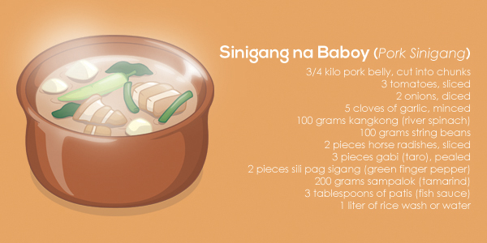

Sinigang

Ingredients
- 2 lbs pork belly
- 1 bunch spinach
- 3 tbsp fish sauce
- 1 bunch string beans
- 3 pieces of chili
- 1 tbsp cooking oil
- 2 qts water
- 1 onion (sliced)
- 2 pieces of taro
- 1 pack - sinigang mix
cooking instructions
- Heat the pot and put-in the cooking oil
- Sauté the onion until its layers separate from each other
- Add the pork belly and cook until outer part turns light brown
- Put-in the fish sauce and mix with the ingredients
- Pour the water and bring to a boil
- Add the taro and tomatoes then simmer for 40 minutes or until pork is tender
- Put-in the sinigang mix and chili
- Add the string beans (and other vegetables if there are any) and simmer for 5 to 8 minutes
- Put-in the spinach, turn off the heat, and cover the pot. Let the spinach cook using the remaining heat in the pot.
- Serve hot. Share and enjoy!